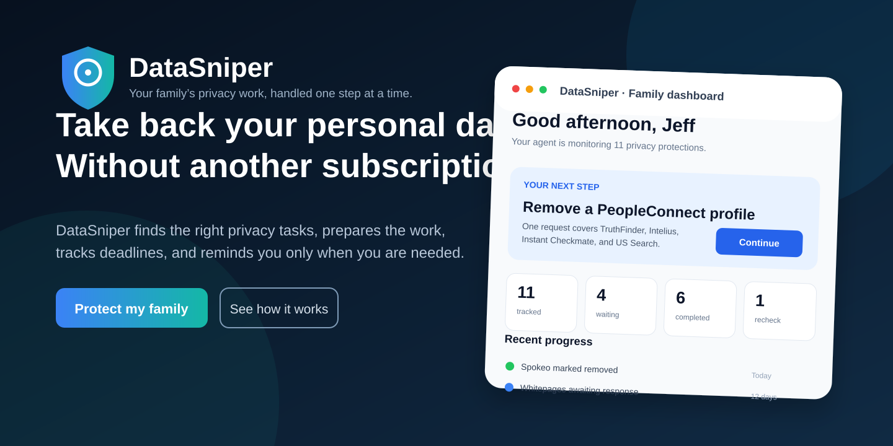
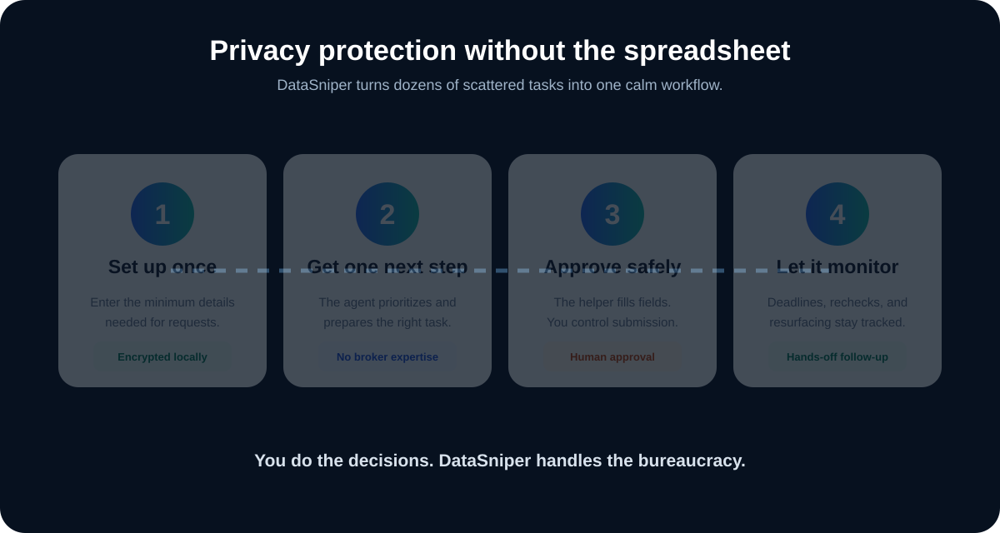
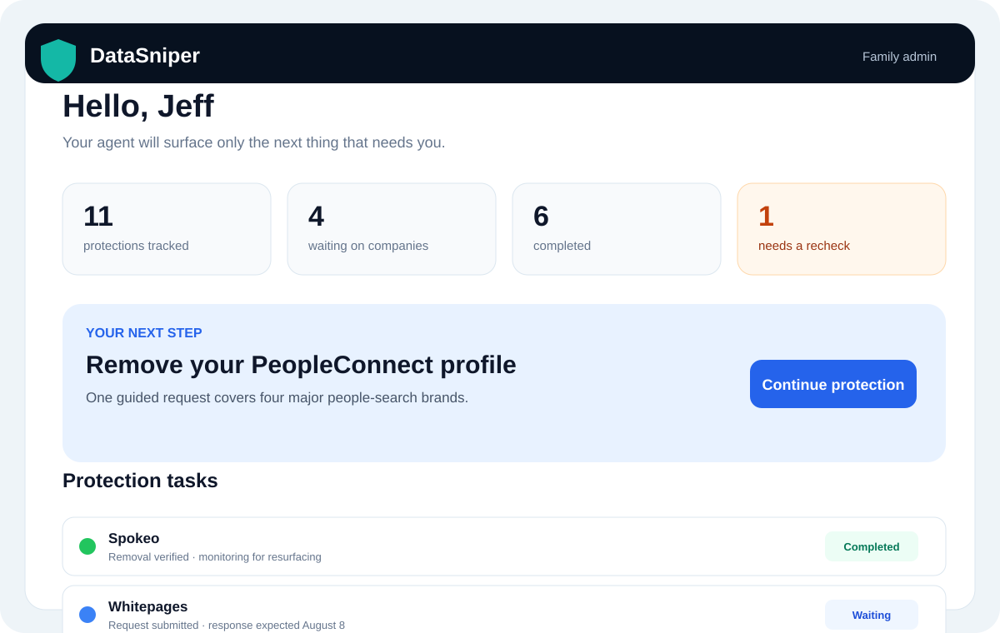
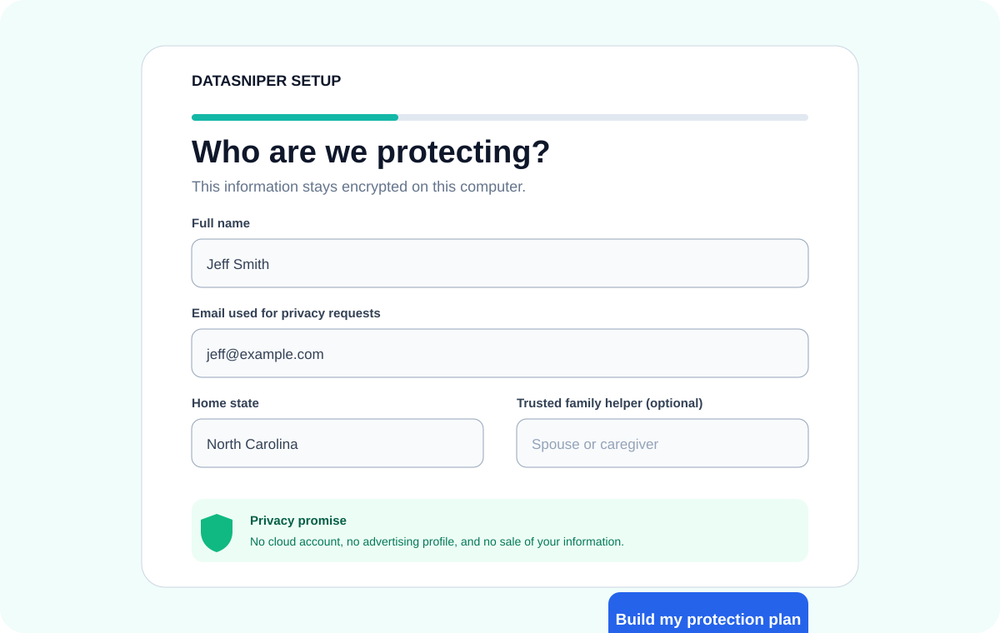
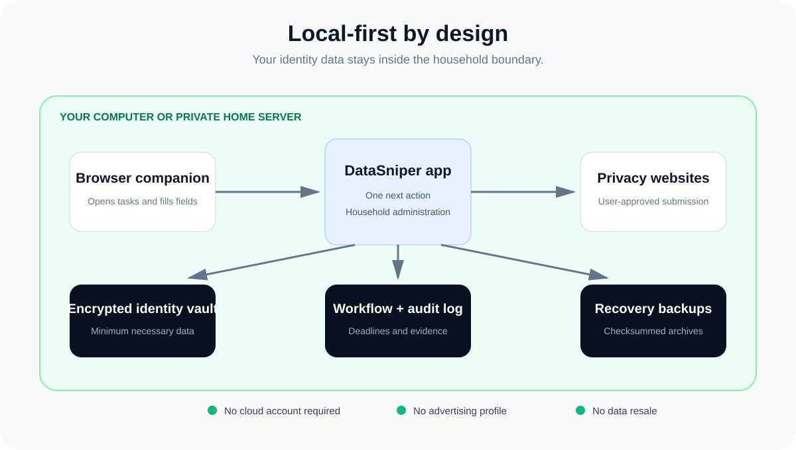

One next action
No broker expertise, giant checklist, or spreadsheet. DataSniper prioritizes the next useful step and keeps the rest out of the way.
DataSniper prepares data-broker removal work, guides safe submission, tracks company deadlines, and asks for your attention only when it is truly needed.

No broker expertise, giant checklist, or spreadsheet. DataSniper prioritizes the next useful step and keeps the rest out of the way.
Large controls, plain language, and trusted-helper support make the process workable for spouses, parents, and caregivers.
Your identity vault and request history stay on your computer or private home server—not inside another vendor’s marketing cloud.
Expected response dates, verification checks, and possible resurfacing stay tracked long after a form is submitted.



DataSniper uses a local-first architecture, explicit human approval, encrypted values, hardened sessions, and checksummed recovery backups.

The browser companion may open tasks and fill recognized fields. It stops before CAPTCHA completion, identity uploads, legal attestations, final submission, appeals, and complaints.
| Capability | DataSniper | Manual | Managed service |
|---|---|---|---|
| Local identity vault | Yes | Usually no vault | Usually cloud |
| Prioritized next action | Yes | No | Varies |
| Deadline tracking | Automatic | Manual | Usually |
| Household helper workflow | Yes | Ad hoc | Varies |
| No recurring subscription required | Yes | Yes | Usually no |
| Transparent audit history | Yes | Only if maintained | Varies |
Start with the household beta, keep the system private, and let DataSniper organize the work.
Download from GitHubCurrent release: production-oriented household beta. Not yet offered as a hosted public service.